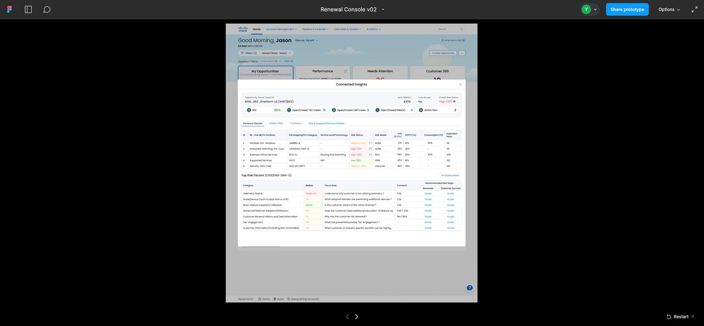
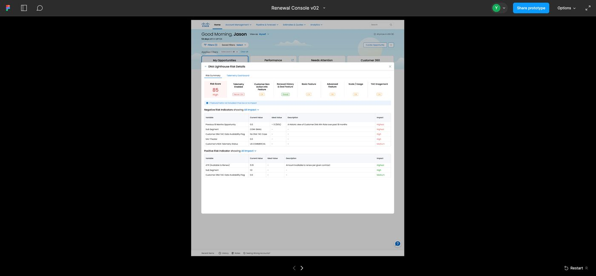
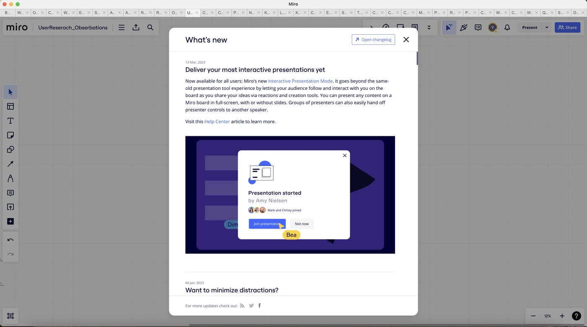
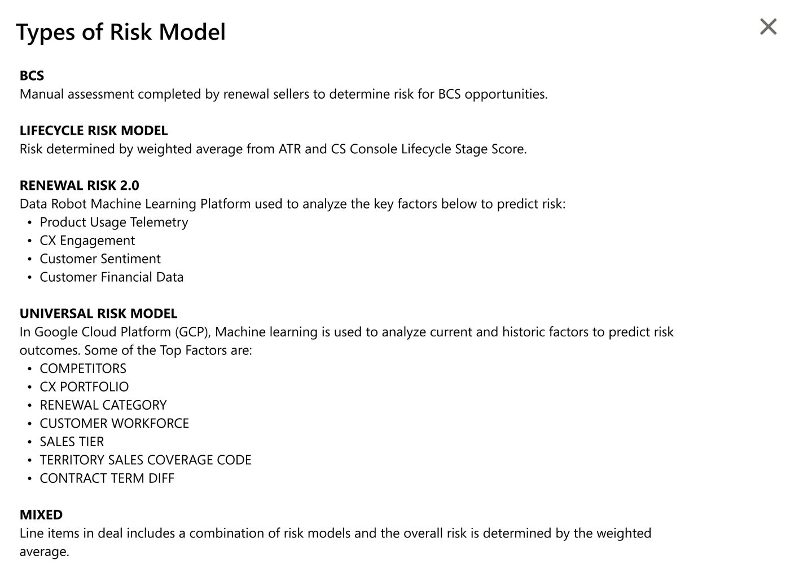
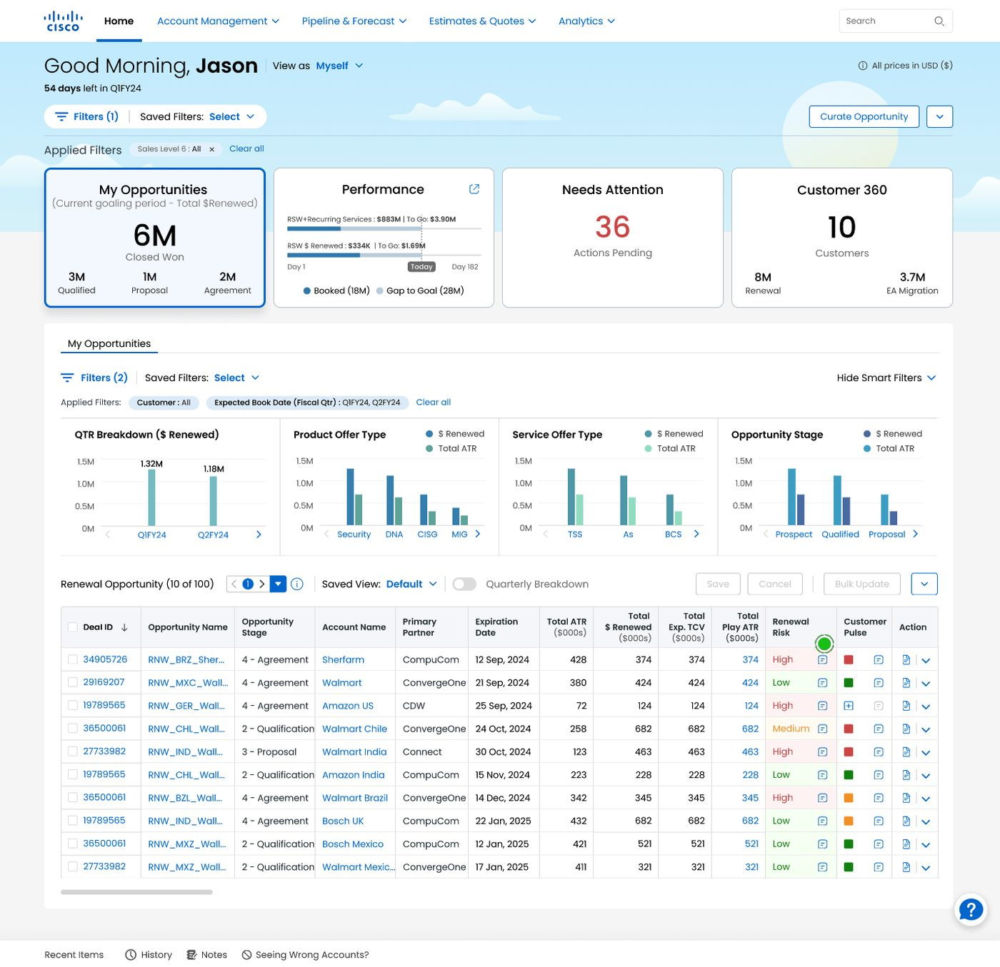

A research study testing whether a line-item-level risk score and popup give Cisco's renewal and customer success teams enough confidence to act on renewal risk — without a training session.


Renewals Console
Renewal Risk is scored two ways in the console — a bubble on the Renewal Risk column, and a Connected Insights popup that breaks the score down by risk factor, action plan, and contact history. Renewal and customer success teams manage renewals across 150+ countries and 200M+ deals, so a scoring model that isn't trusted just gets ignored.
We ran 40-minute sessions with 10 participants — renewal managers, customer success executives and specialists — across the Americas, EMEA, and APJC, to see how they actually used Renewal Risk today, and to test the new Connected Insights concepts against real workflows.

The Approach
Each session covered current workflow and usage of Renewal Risk, then a walkthrough of the proposed design in Figma. Participants ranged from 2 to 26 years at Cisco, spanning renewal, customer success, and specialist roles.
| # | Title | Region | Years at Cisco |
|---|---|---|---|
| 1 | Renewal Manager | Americas (US) | 2 |
| 2 | Renewal Manager | EMEA | 8 |
| 3 | Customer Success Executive | Americas (US) | 12 |
| 4 | Renewal Specialist | Americas (US) | 2 |
| 5 | Customer Success Executive | Americas (US) | 3 |
| 6 | Customer Success Specialist | Americas (US) | 12 |
| 7 | Customer Success Executive | Americas (US) | 3 |
| 8 | Leader, Renewal Specialist | EMEA | 26 |
| 9 | Success Program Manager | EMEA | 3 |
| 10 | Renewal Specialist | APJC | 4 |
Key Takeaways
Most participants found the risk detail, action plan, and contacts genuinely helpful once they used it. But two habits got in the way early on: people clicked the deal link before they clicked the risk bubble, and several doubted the score's accuracy until they understood how it was calculated.
Finding 1
Use cases varied by role, but most participants rarely relied on Renewal Risk day to day — largely because they doubted the model's accuracy and defaulted to asking a customer or partner directly instead.
Surface a brief explanation of how the risk model works, plus feedback or collaboration history (like Customer Pulse), so the score carries context — not just a number — regardless of role.
Finding 2
Faced with the Renewal Risk column, most people's first instinct was to click the deal ID or opportunity name — not the bubble that opens Connected Insights. It's the habit the console already trained them to have.
Introduce new functions in place, not just in training. A lightweight "what's new" popup on login teaches the new interaction the moment it matters.
Finding 3
Participants tried clicking directly on the risk status (High, Medium) in the Top Risk Factors table, following the mental model set by the popup's main page — not the separate Guide links meant to explain it.

Keep the behavior pattern consistent: move Recommended Steps next to Status, or make the status column itself clickable.
"I would then probably go to status and click on it — see if it were hyperlinked or something."
— Participant 5, Customer Success Executive
Finding 4
"Ok" and "Good" in Top Risk Factors status, "High" and "Highest" in Risk Summary impact — inconsistent terms across roles left people unsure what standard was actually being used.
Rather than force one vocabulary across every role, add info icons and tooltips that explain each term in place, and tighten definitions like "All Explanations."

Finding 5
7 of 10 participants prioritized their work the same way: high ATR, earliest expiration date, high Renewal Risk. Without sorting, they had to scan manually every time.
Add a quick sort next to Deal ID for Renewal Risk, ATR, and Expiration Date — in both the console and the popup.
All 10 participants passed UAT. The clearest risk wasn't the design — it was rollout: without WalkMe or an in-product guide, even a well-tested popup needed a plan for how people would discover it.
Findings & Recommendations
Finding
Users doubted the risk model's accuracy.
Recommendation
Explain how the model works; surface Customer Pulse history for added trust.
Discussion
Explanations exist and can ship within days. Customer Pulse integration targeted for March, aligned with the CS team.
Finding
Users click Deal ID instead of the risk bubble.
Recommendation
Introduce new functions in-product with a "what's new" style guide.
Discussion
No existing framework — WalkMe proposed. Video training and phased geo rollout planned alongside the Feb release.
Finding
Users expect the status column to be clickable.
Recommendation
Move Recommended Steps beside Status; keep interaction patterns consistent.
Discussion
Agreed on the sequence: Status → focus area → who to contact → Guide's next step.
Finding
Terminology is inconsistent across roles.
Recommendation
Add tooltips; standardize what each term and color means.
Discussion
95% of users don't use tooltip icons today — design fix prioritized over training. Standards to be defined with the header team.
Finding
Users want high-risk, high-ATR items sorted to the top.
Recommendation
Add sorting by Renewal Risk, ATR, and Expiration Date.
Discussion
Sorting targeted for the March release, alongside customizable, reorderable columns.
Next Steps
What the work required
A risk score is only as useful as people's willingness to act on it. The real design problem here wasn't the popup's layout — it was closing the gap between what the model calculated and what a renewal manager was willing to believe. Clarity about how a number was reached turned out to matter more than the number itself.
This report fed directly into the Feb 2024 release plan, and opened a second question the team is still working through: how to keep terminology, color, and interaction patterns consistent as more risk signals get added to the console over time.